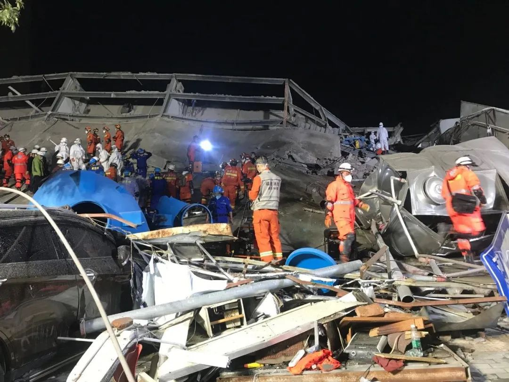
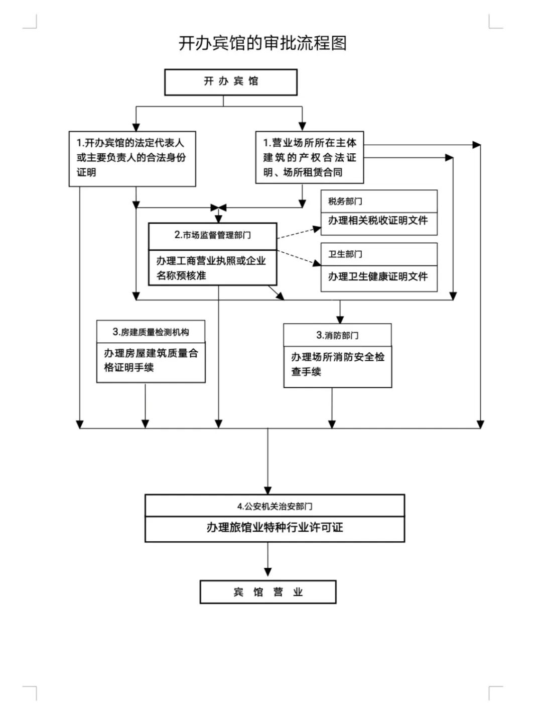

追问泉州坍塌酒店：装修改造是否违规？为何成为疫情隔离点？
原文链接 备份链接 在疫情防控期间，各地酒店纷纷关门，开业不久却两次被行政处罚的泉州欣佳酒店何以能成为疫情防控的集中隔离点？该酒店自2017年就在大楼内多次进行改装，相关手续是否齐全？及时回应这些疑点，有利于缓解公众的担忧 文 |《财经》 …

进一步调查发现，泉州坍塌酒店涉嫌“非法建设、违规改造”的背后，不动产权证办理、土地转性程序、旅馆业特种行业许可审批环节皆有漏洞

文 |《财经》记者 黄姝静 俞琴 鲁伟
编辑 | 鲁伟
距离福建泉州欣佳酒店坍塌已过去15天。
3月7日19:05，作为泉州市鲤城区新冠肺炎疫情隔离点的欣佳酒店发生严重坍塌事故，造成71人被困，另有9人自行逃生。虽经各方面紧急救援，但最终共有29人在这次严重坍塌事故中丧生。近期随着相关调查推进，有关这座坍塌大楼非法建设、违规改造的诸多隐情陆续曝光。
事故发生后，国务院安委会办公室第一时间派出由副主任付建华带队的工作组赶赴现场，指导协助地方开展救援处置工作。3月12日11:04，现场找到了最后一名受困者，但已无生命体征。
3月13日，国务院事故调查组发布初步调查结论：“项目未履行基本建设程序，无规划和施工许可，存在非法建设、违规改造等严重问题”，“地方相关职能部门监管不到位、‘打非治违’流于形式，导致安全关卡层层失效，最终酿成惨烈事故”。那么，这个在当地看起来普通的欣佳酒店，究竟僭越了哪些“基本建设程序”，“非法建设”具体涉及哪些问题？
《财经》记者独家获悉：欣佳酒店的不动产权证存在明显问题，产权证上的使用面积远大于宗地面积，前者是后者的十倍之多，针对这个“疏漏”，不仅土地方面的专家直言“有问题”，当地不动产登记中心有关人士回应《财经》的问询时也表示惊讶。
相关不动产权证还显示，欣佳酒店所在地块为国有土地，这与此前当地有关人士所称地块为集体土地的说法并不一致。这块土地究竟是如何从集体变为国有，据悉，调查组目前尚未查到本应依法留存的相关材料。
《财经》记者还了解到，欣佳酒店疑似在消防安全检查并未合格的情况下，就“提前”获得了《特种行业经营许可证》，涉嫌违反“开办宾馆的审批流程”。
据《财经》此前披露，欣佳酒店所在大楼的业主已被公安部门控制，其与酒店经营者杨金锵为同一人。杨金锵在上世纪90年代就建起别墅，被与其打过交道的人士评价“很厉害”。
杨金锵本人早年曾卷入当地土地拆迁的系列腐败窝案，欣佳酒店开业不久就被三次行政处罚。疫情防控期间，各地酒店纷纷关门，欣佳酒店是如何成为疫情防控集中隔离点的？欣佳酒店多次违规改造，且坍塌前已现坍塌征兆，地方相关职能部门监管何在？这些公众极为关注的谜团，有望陆续揭蛊。
问题产权证：伪造还是疏漏？
公开信息显示，出事前欣佳酒店的经营者为杨金锵，杨亦为酒店所在大楼的业主。根据官方通报，坍塌的大楼建设于2013年，主体7层，每层1000平方米，楼高22米，为钢结构建筑物。2018年改造为欣佳酒店，并于同年6月开业，酒店有各类客房共计66间。
此前曾有很多人追问：“欣佳酒店装修改造是否违规”、“是否属于违法建筑”。而根据调查组的初步结论，坍塌的大楼确实“存在非法建设、违规改造等严重问题”。
《财经》记者近日获得的一份明显存在问题的不动产权证，可视为欣佳酒店被指非法建设的一个重要证据。

这份“闽（2018）泉州市不动产权第0017128号”显示，权利人：泉州市新星机电工贸有限公司（法定代表人杨金锵，下称泉州新星机电公司）；坐落：泉州市鲤城区江南街道上村社区；权利类型：国有建设用地使用权/房屋所有权；权利性质：出让/自建房；用途：商业；产权证上盖有鲤城区欣佳旅馆（即欣佳酒店）公章。
产权证显示，欣佳宾馆所在大楼的宗地面积与独用土地使用权面积并不相符，前者为3363.3平方米，后者为33633平方米，后者为前者的十倍。这是因为遗漏了小数点，还是有意为之，目前《财经》未收到有关方面的回应。
所谓宗地面积，是指地块的总面积，而独用土地使用权面积包含在宗地面积内。北京市房地产法学会副会长兼秘书长、首都经济贸易大学教授赵秀池接受《财经》记者采访时“怀疑这个证有问题”，原因在于，宗地面积只能大于或等于独用土地使用权面积，但不会小于独用土地使用权面积。“如果一宗土地没有共有人，那么独用土地使用权面积应当与宗地面积相等；如果有共有人，那么其独用土地使用权面积应该小于宗地面积。”
北京市才良律师事务主任王才亮持类似观点，他对《财经》记者表示，宗地有可能还包含了与别人共有的土地。因此独用土地使用权面积一般会小于宗地面积，至少不会大于宗地面积。
《财经》记者注意到，前述不动产权证上的“共有情况”显示为空白，这意味着，土地并无共有人，即宗地面积应与独用土地使用权面积相等。
“一看到这个产权证，我就发现有问题。”有“拆迁法专家”之称的王才亮对《财经》记者表示。
有业内人士认为，上述问题产权证存在两种可能：第一，产权证涉嫌造假；第二，产权证为“真”证件，但办理程序存在瑕疵，极有可能存在“内外勾结”的情况。
该人士补充称，在第二种可能性中，很可能是故意漏掉小数点，将3363.3平方米写为33633平方米，这样一来权利人将来即可以此为据，将周围的土地“吃”进来，倘若遇到拆迁征收，还可以谋取更大的利益。
王才亮向《财经》记者表示，他曾遇到过数起产权证上“数字标错”、“内外勾结”的案例。他举例称，在一起案件中，当事人搭起部分临时建筑，在仅有5层楼房屋面积的情况下，却办理了涵盖6层楼的不动产权证。事实上，该临时建筑部分并未达到可验收标准。据当地有关部门查处结果，前述产权证办理过程存在内外勾结的情节，办证人员也被查处。
3月20日《财经》记者致电泉州市不动产登记中心，该中心一位工作人员对产权证上独用土地使用权面积为宗地面积十倍一事表示惊讶，“怎么可能呢？使用面积怎么会超过宗地面积？”
这位在泉州市不动产登记中心工作多年的人士表示，产权证的独用土地使用权面积超过宗地面积的情况，自己从没见过。但他也补充称，不排除存在特殊情况，如果系统里有档案，那么这个产权证就是有效的，“以实际情况为准”。
但是，这名工作人员拒绝辅助查询产权证的真伪。他表示，只有本人才能查询相关资料。比如，当租赁房子时，租客可以要求房东陪同到不动产登记中心查询档案，以确认产权证真伪。
关于欣佳宾馆产权证是否属于伪造的问题，3月18日晚，泉州市鲤城区委宣传部相关人员向《财经》记者表示，“这个要通过调查组了解才会清楚”，“目前都以调查组为主导，我们相关部门按要求配合”。
土地性质争议：集体如何变身国有？
欣佳酒店的登记地址为泉州市鲤城区常泰街道上村社区南环路1688号。关于欣佳酒店所在的这块土地，杨金锵曾向一位入驻该大楼的合作伙伴提及，这是杨所在村子的土地，并表示当时还涉及一些纠纷，但并未明说是何纠纷。
3月13日，新京报《紧急呼叫》栏目报道称，事发地原为村集体土地，杨金锵在2010年前后，获得了部分用地。
欣佳酒店所在地块性质到底是什么？多位当地村民及《财经》记者此前了解的信息是，欣佳酒店所在土地是集体用地，但前述不动产权证显示的地块性质为国有建设用地。
据“上游新闻”报道，2011年杨金锵在办理土地证的时候，需要一份已给予村民集体组织土地补偿款的证明，尽管社区在这份证明上盖了章，但是上村社区新宅村的村民却没有这笔补偿款的任何转账记录。而这块土地是属于新宅村民的集体土地，土地性质从未发生变更，没收到补偿的村民们认为，土地仍然属于新宅村村集体所有。
根据《土地管理法》规定，集体土地转为国有土地，应当依法经过土地征收程序。其中包括政府批准、发布征收公告、拆迁补偿安置的确定等一系列复杂的流程。
王才亮表示，欣佳酒店所在的地块原本是个村办农场，应是集体土地，那么这块地从集体土地转为国有土地，程序上是必须由原土地所有人村委会批准才可能完成。
3月19日，《财经》记者向上村社区党支部书记杨金伟询问欣佳酒店所在的地块性质及变更过程。杨金伟表示，杨金锵获得土地时，他并不在任上，因此不清楚具体情况。
欣佳酒店所在地块，如何由集体土地摇身一变为国有建设用地？接近调查组的人士表示，调查组目前获得的材料中亦包括欣佳酒店的国有土地建设用地使用权证。但这块土地以何种程序从集体土地变为国有土地，调查组至今未能掌握相关材料。
3月20日，《财经》记者致电泉州市自然资源和规划局办公室，询问欣佳酒店所在地块由集体土地变更为国有土地的具体流程、确认当前该地块的具体性质时，接听电话的工作人员表示，不清楚此事，需要“问一下主任”。片刻之后，这名工作人员表示，主任以及领导都出去开会了，“我是新来的，也不懂这些东西，没办法给您答复。”
同一天，《财经》记者联系了泉州市自然资源和规划局用地规划管理科，工作人员称，她需要询问科长后，再向记者答复。不过，截至发稿前，《财经》记者都未接到回复。此后《财经》记者在工作时间多次拔打用地规划管理科电话，均无人接听。
审批程序存疑：“提前”获得经营许可证？
能够成为泉州市鲤城区指定的新冠肺炎疫情隔离点，一般而言酒店在当地的名声与口碑不会太差，但据当地知情人士称，这个欣佳酒店自营业以来可谓“劣迹斑斑”，相关公开信息亦显示：短短一年多的时间里，该酒店多次被行政处罚。
2018年11月16日，欣佳酒店因未按规定办理住宿登记，被泉州市公安局鲤城分局责令立即整改，并对该酒店处以警告并处罚款3000元。同日（2018年11月16日），酒店还因未执行住宿登记制度被警告并罚款3000元。
2019年12月4日，欣佳酒店再次因“未按规定办理住宿登记”被泉州市公安局鲤城分局责令立即整改，并对该酒店处以警告并处罚款3000元。
2019年7月17日，欣佳酒店因未按照《个体工商户年度报告办法》规定报送年度报告，被泉州市工商行政管理局鲤城分局列入经营异常名录。
有分析人士指出，欣佳酒店2018年11月16日首次被公安机关处罚，这意味着在那时就已与有关部门信息共享了，也意味着在那时该酒店就已经获得了《旅馆业特种行业许可证》。
有消息称，欣佳酒店早在2018年6月之前就拿到了《特种行业经营许可证》。
按照开办宾馆的审批流程，在申办《特种行业许可证》时，酒店经营者必须出具一系列证明文件，其中很重要的一项就是消防安全检查手续。

但《财经》记者此前获得的一份《建设工程竣工验收消防备案复查意见书》显示，欣佳酒店曾经有一次“竣工验收消防备案检查不合格”的记录，并于2019年1月15日申请复查，直到2019年1月22日才被评定为“消防复查合格”。
欣佳酒店在《建设工程竣工验收消防备案复查意见书》之外，是否另有消防安全检查手续？如果没有，佳欣酒店何以能“突破”福建《特种行业和娱乐服务场所审批备案工作规范》，在“消防复查合格”之前就提前获得《特种行业经营许可证》？
根据前述产权证明，欣佳酒店的权利人为泉州新星机电公司，该公司成立于2006年2月17日，注册和实缴资本均为330万元人民币，实际控制人为杨金锵，占股90.91%。该公司经营范围为销售机电设备、电子产品、建筑材料、五金、百货；生产、加工机械配件等。
2006年8月3日，泉州市国土资源局就违法占地建简易厂房对泉州新星机电公司做出处罚，责令退地，限期拆除。但“暂无从知晓泉州新星机电公司当年违规占用了哪一处土地。”
杨金锵其人：曾卷入腐败窝案
欣佳酒店倒塌事件发生以来，《财经》记者多次拨打杨金锵的电话，但一直无人接听。
一位与杨金锵打过交道的人士对《财经》记者回忆，杨金锵的家就位于事发建筑背后的村子里，是一栋二层半的别墅，建于上世纪90年代，院落宽敞，在周围建筑的映衬下较为显眼。
“上世纪90年代就有别墅的人，那肯定很厉害。”这位人士评价杨金锵时称，杨是一个出色的生意人。
根据可查询到的当地公开信息，这位当地人眼里“很厉害”的杨金锵，其实很早以前就曾卷入当地颇具影响的泉三高速公路鲤城段征地拆迁系列腐败案。
《泉州晚报》2010年发表一篇题为《泉三高速公路鲤城段征地拆迁系列腐败案审结》的报道，报道称系列腐败案中的第三起典型虚构拆迁补偿案发生在鲤城常泰街道上村社区杨某父子身上。
上述文章称，2005年年底，泉三高速公路需征迁某部队营区土地12.8亩及营区内的建筑及附属物。承租该营区的上村社区居民杨某父子与鲤城区房屋拆迁公司原经理蔡某共谋，采取虚增拆迁营房附属物数量和项目的手段，骗取国家拆迁补偿款37万多元。之后，杨某父子再次与蔡某捏造营房原有电缆等配电设备被拆除未得到补偿一事，骗取国家拆迁补偿款56万多元，事后蔡某从中分得10万元。该案给国家造成了巨额损失。
另据《南方周末》报道，多位上村人士表示，上述杨某即指向杨金锵家族。
近年来，除了欣佳酒店及泉州新星机电公司被罚之外，杨金锵本人也曾卷入司法纠纷。
2017年，杨金锵曾以保证人身份被卷入一起金融借款纠纷，成为案件的被告之一。相关司法材料显示，被告谢某某因未能按时向厦门银行泉州分行归还借款，被后者诉至法庭。福建省泉州市丰泽区人民法院一审判决被告谢某某需向原告偿还借款本金272092.22元、利息12056.24元、罚息652.92元、复利320.44元。杨金锵及其他被告对谢某某的前述债务向原告承担连带保证责任，并在承担了保证责任后，有权向被告谢某某追偿。
前述与杨金锵打过交道的人士表示，初次接触杨金锵是在2013年，当时汽车销售行业正处高峰期，他打算租个店面做汽车销售生意，而事发建筑正好张贴出了招租启示。杨金锵在自己的别墅里展示了事发建筑的规划图，并表示，为了建这栋7层楼的房子，还向银行贷了款。“能贷款，肯定不可能是违建。”这位人士称。
这位人士回忆，2017年，杨金锵开始在楼上装修欣佳酒店，运送建筑材料，要从公司店面一侧的电梯上去，“对我的影响比较大”。这位人士曾就此和杨金锵沟通，对方让其进行评估后给出一个赔偿方案。但杨金锵最终不认可赔偿方案，加之酒店装修期间“爆了五六块玻璃”，2017年底，这位人士将公司搬离大楼。3月7日，在得知酒店大楼发生坍塌事故后，这位人士表示此前就有征兆，他对坍塌并不感到意外，只不过，“搬走时没想到会这么严重。”
3月13日，欣佳酒店坍塌事故调查组第一次全体会议在福建泉州召开，国务院安委会办公室副主任、事故调查组组长付建华主持。会议指出，事故发生在全国上下全力抗击疫情和复产复工的关键时期，事发酒店还是地方政府指定的医学隔离观察点，性质严重、影响恶劣。“重点查清非法建设和违规改造问题，查清欣佳酒店违规经营和为何被选定医学隔离观察点问题，查清有关部门的失职、渎职问题。”
相关阅读：
【版权声明】本作品著作权归《财经》独家所有，授权深圳市腾讯计算机系统有限公司独家享有信息网络传播权，任何第三方未经授权，不得转载。

▲点击图片查看更多疫情报道
责编 | 蒋丽 lijiang@caijing.com.cn
本文为《财经》杂志原创文章，未经授权不得转载或建立镜像。如需转载，请在文末留言申请并获取授权。
原文链接 备份链接 在疫情防控期间，各地酒店纷纷关门，开业不久却两次被行政处罚的泉州欣佳酒店何以能成为疫情防控的集中隔离点？该酒店自2017年就在大楼内多次进行改装，相关手续是否齐全？及时回应这些疑点，有利于缓解公众的担忧 文 |《财经》 …
原文链接 备份链接 酒店在装修期间，就曾引发同楼商户对承重能力的担忧。“在酒店装修的那两三个月，因为压力问题，我们一楼商户的门窗玻璃被挤压炸裂五六块，后来觉得房子太危险，我就搬走了。” 记者 | 吴 雪 3月7日，随着莆田、漳州两市11名 …
原文链接 备份链接 为何将这座屡次被罚 且所在建筑内部仍在装修的酒店 定为疫情隔离观察点？ 3月7日晚，泉州鲤城区欣佳酒店所在的建筑发生楼体坍塌，楼内9人自行逃出，71人被困。截至3月8日16时，已救出48人，其中10人死亡，余下38 …
原文链接 备份链接 记者/曹慧茹 李佳楠 佟晓宇 李东 实习记者/周缦卿 编辑/ 石爱华 宋建华 泉州一七层建筑整体坍塌 3月7日19时15分，泉州市鲤城区一栋大楼发生整体坍塌事故，事故现场共有71人被困（不含自救逃生的9人）。截至3月8 …
原文链接 备份链接 该酒店之前被改造为泉州鲤城区的医学观察点，用以隔离观察密切接触者，事发时被困人数约70人。参与救援的人士表示，现场情况“惨烈”。知情人称，酒店所在建筑曾进行大规模改造 文 |《财经》记者 俞琴 白兆东 鲁伟 编辑 | …